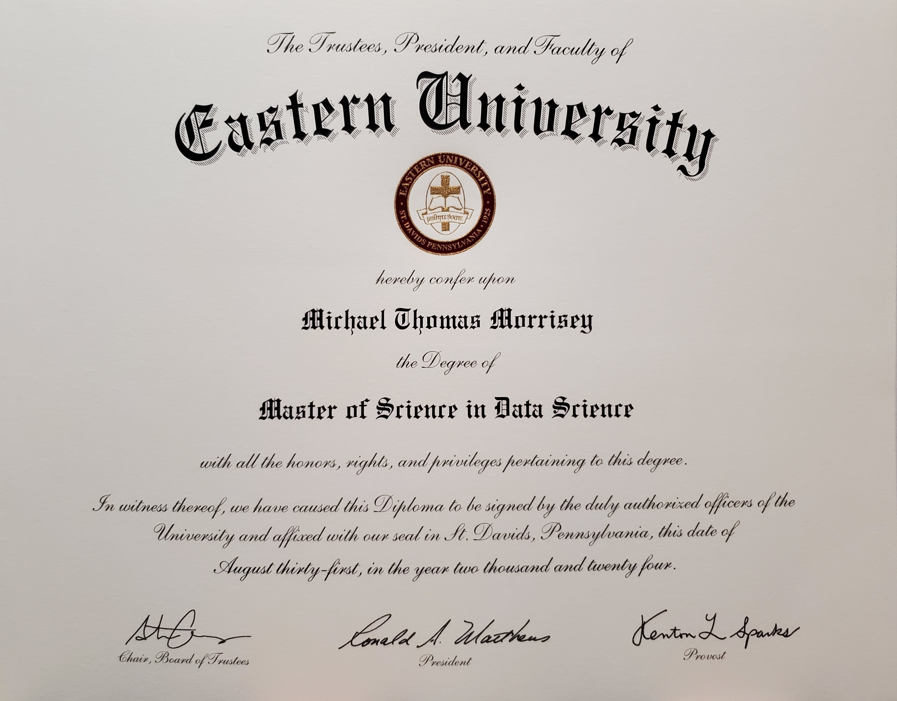

Welcome
Feel free to get in touch!
- email: Michael.Morrisey@gmail.com
- GitHub: https://MichaelTMorrisey.github.io/
- LinkedIn: https://www.linkedin.com/in/MichaelMorrisey/
Projects
- ADK Maps (Slideshow)
- ADK Rent Calculator (Spreadsheet)
- ADK Rooms (Fair resource allocation)
- ADK SQL (Relational Database)
- Classification
- Clustering
- Dimensionality Reduction
- Linear Regression
- Logistic Regression
- Website
Resume
About
Degrees
I am a graduate of the Data Science Master's program at Eastern University in Pennsylvania. I also holds an Associate's Degree in Computer Science from the Community College of Philadelphia, and a Bachelor of the Arts degree in Creative Writing from SUNY Oswego.
Selected Coursework
Eastern University
- DTSC 520: Fundamentals of Data Science
- DTSC 550: Introduction to Statistical Modeling
- DTSC 580: Data Manipulation
- DTSC 600: Information Visualization
- DTSC 650: Data Analytics in R
- DTSC 660: Data and Database Management with SQL
- DTSC 670: Foundations of Machine Learning Models
- DTSC 680: Applied Machine Learning
- DTSC 685: Natural Language Processing
- DTSC 690: Capstone: Ethical and Philosophical Issues in Data Science
Community College of Philadelphia
- CIS 150: Network Technology
- CIS 205: Database Management Systems
- CSCI 111: Computer Science I with Java
- CSCI 112: Computer Science II with Java
- CSCI 213: Computer Organization
- CSCI 211: Data Structures and Algorithms
- MATH 251: Statistics for Science
- MATH 271: Calculus III: Multivariable Calculus
- MATH 163: Discrete Math I
- PHYS 140: Mechanics, Heat & Sound
- CHEM 110: Intro to Chemistry
- CHEM 121: College Chemistry I
- CHEM 122: College Chemistry II
- CHEM 221: Organic Chemistry I
SUNY Buffalo State
- C++
- Linear Algebra
- Physics I
- Physics II
- Case Studies in Environmental Science
- HIS 469: Black Protest
SUNY Oswego
- PST 101: Introduction to Conflict Studies
- HON 200: Basic Concepts in Social Science
- PSY 100: Principles of Human Behavior
- COM 240: Group Interaction and Discussion
- ENG 380: Narratives of Identity
- ENG 360: Literature in a Global Context
- MAT 210: Calculus I
- MAT 220: Calculus II
- MAT 215: Intro to Discrete Mathematics
- ECO 101: Principles of Microeconomics
- CHE 300: Environmental Science
- PHY 305: Energy and the Environment